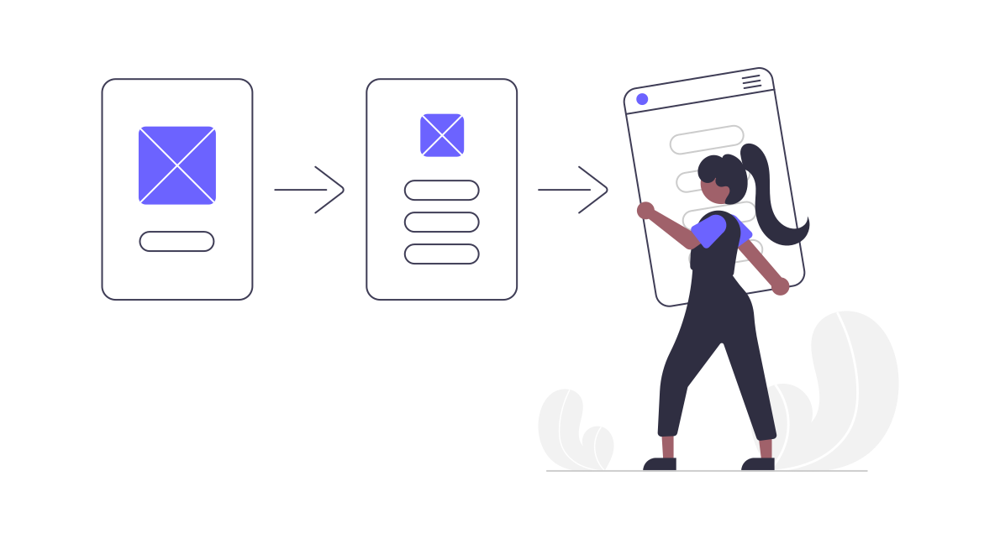

API REST Open-Source para crear usuarios, publicaciones y perfiles fácilmente.


¡Crea usuarios, publicaciones y perfiles en segundos con nuestra API REST fácil de usar! Personaliza perfiles y automatiza la creación de contenido de calidad. Además, nuestra API REST es ideal para realizar pruebas en entornos de desarrollo, lo que te permitirá ahorrar tiempo y esfuerzo en la creación y gestión de usuarios y contenido de prueba. Lo mejor de todo, es que nuestra API es Open-Source. ¡Ahorra tiempo y aumenta la eficiencia en tus proyectos de desarrollo con nuestra API REST! Prueba nuestra API hoy mismo.